Week 13 - CADE 691
Maps with {sf} and {ggplot}
Weekly Check In/
Download .zip
Start Recording
Today’s Agenda
- Weekly Check In
- Foundational Ideas
- Vector spatial data and {sf}
- Finding geometries/shapefiles: tigris and
st_read() - Two Use Cases
- Plotting points
- Creating choropleth maps
- Collaborative Practice
- Looking Ahead
Norms
| In person norms | And also, for online learning… |
|---|---|
| Be fully present to each other & the work. | Keep your video on when possible. In large groups, mute your microphone when not talking. Close/mute/minimize other apps and devices to avoid distraction. |
| Assume positive intent & also take responsibility for the impact you have. | Remember online interaction masks even more of the full story. Notice when you are making assumptions, and seek information to check them. |
| Embrace collaboration. | Use the gallery view so you can see everyone. Use breakout groups as an opportunity to collaborate. |
| Be open to learning and accept non-closure. | Expect the inevitable technical glitches and learning curves. Exercise patience with one another. |
| Be aware of when to step up and step back. When stepping back, do so as an active listener. | Try out different modes of participation. Step back by making space for others to engage in these. |
| Land your plane–get to the point you intended. | We all know how hard it is to be talked at, especially in a Zoom session, so let’s keep it to a minimum. |
Foundational Ideas
- Feedback on Mini-Project #2
- YAML Headers
Visualizing data with maps
In addition to being fun and creative, cartography also has important practical applications. A carefully crafted map can be the best way of visualizing data.
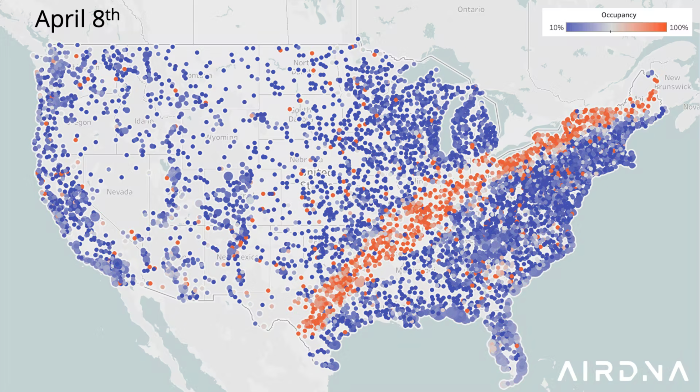
Vector spatial data and {sf}
The {sf} package
- Maps in R are usually stored as simple features (sf): points, lines, and polygons
- The {sf} package lets us work with them. An sf object is just a data frame with a
geometrycolumn - {sf} cheat sheet
The {sf} package
- Looks like a regular data frame: one row per county…
- …plus a
geometrycolumn holding each county’s shape
Simple feature collection with 6 features and 2 fields
Geometry type: MULTIPOLYGON
Dimension: XY
Bounding box: xmin: -81.74107 ymin: 36.07282 xmax: -75.77316 ymax: 36.58965
Geodetic CRS: NAD27
NAME AREA geometry
1 Ashe 0.114 MULTIPOLYGON (((-81.47276 3...
2 Alleghany 0.061 MULTIPOLYGON (((-81.23989 3...
3 Surry 0.143 MULTIPOLYGON (((-80.45634 3...
4 Currituck 0.070 MULTIPOLYGON (((-76.00897 3...
5 Northampton 0.153 MULTIPOLYGON (((-77.21767 3...
6 Hertford 0.097 MULTIPOLYGON (((-76.74506 3...geom_sf()
geom_sf()is a {ggplot2} geom for drawing sf objects- It figures out the geometry type (points, lines, polygons) for you
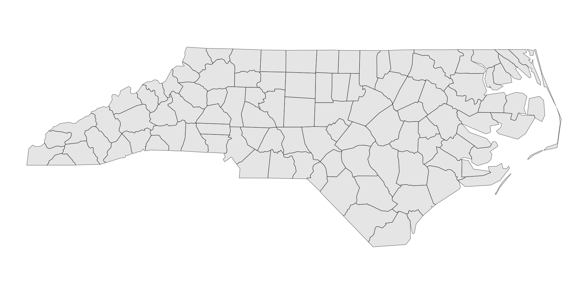
Specifying the aesthetics
Since it is a ggplot2 object, we can set aesthetics as usual, like fill and color:
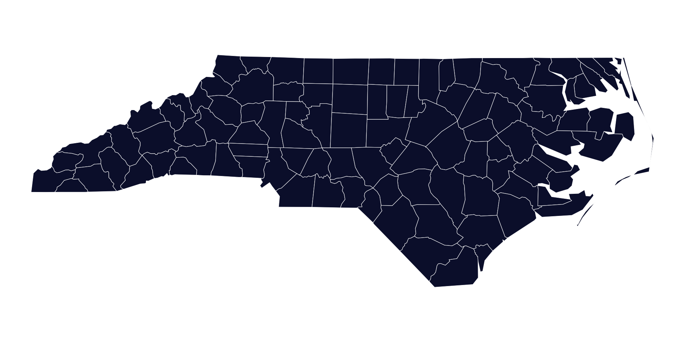
Finding shapes
Finding shapes
- The
ncdata came with {sf}, but usually you’ll need to find the shapes you want to map- e.g., to color in Tennessee counties, you need the boundaries of each county
- Two easy ways to get them:
- A package that downloads them for you, like {tigris}
- A shapefile you download and read in with
st_read()
The {tigris} package
- {tigris} downloads shapes from the US Census Bureau:
states(),counties(),school_districts(),roads(), and more- See all the functions: https://github.com/walkerke/tigris
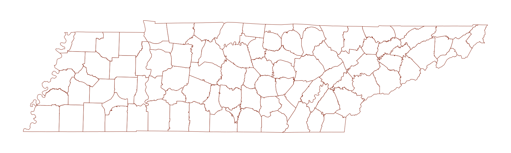
The {tigris} package
What about the whole US?
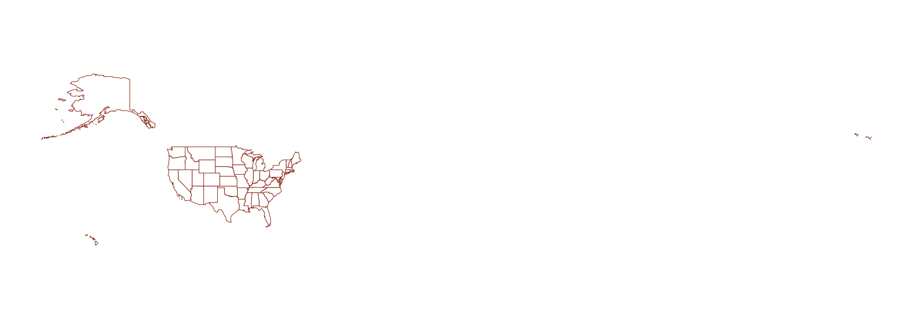
YUCK! Alaska and Hawaii are far away.
shift_geometry()
shift_geometry()(also from {tigris}) moves Alaska and Hawaii under the lower 48
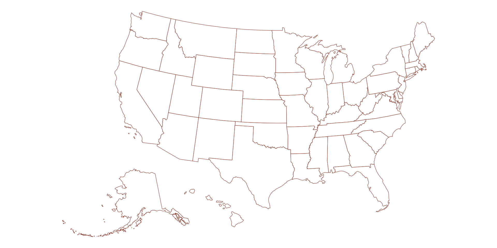
Labeling maps
geom_sf_label()(from {ggplot2}) puts a label in the middle of each shape, but small shapes can overlapgeom_label_repel()from {ggrepel} (remember Week 10?) moves the labels apart. Addstat = "sf_coordinates"so it can find each shape’s location
geom_sf_label()
Where to find shapefiles
- Lots of agencies and organizations share shapefiles for free, including Knox County:
Reading shapefiles
- A shapefile usually downloads as a
.zipfolder. Unzip it, but keep all the files together - Let’s map the Knox County Zoning districts. I unzipped it into a folder called
shapefiles
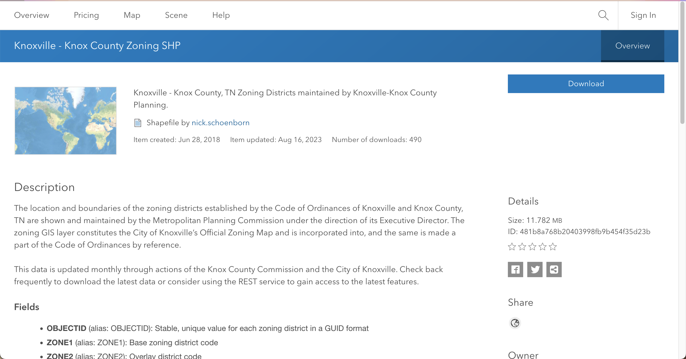
Reading shapefiles
Use st_read() (spatial functions in {sf} start with st_):
dsn: the path to the shapefile folderlayer: name of the shapefile
Reading layer `Knoxville-Knox_County_Zoning' from data source
`/Users/kboles2/Documents/Classes/viz-data-using-r/week-13/shapefiles'
using driver `ESRI Shapefile'replacing null geometries with empty geometries
Simple feature collection with 13230 features and 10 fields (with 14 geometries empty)
Geometry type: GEOMETRY
Dimension: XY
Bounding box: xmin: 2479441 ymin: 536582.7 xmax: 2663425 ymax: 680917.9
Projected CRS: NAD83(HARN) / Tennessee (ftUS)Tip
I like to add _sf to the names of spatial objects so I remember they aren’t regular data frames.
Two Applications/Cases
#1: Adding Our Own
Data/Points (.csv)
to Map
Plotting the shapefile
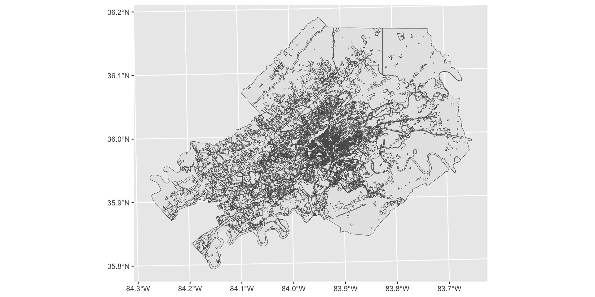
Adding our data as .csv
A quick word on CRS
- Every map has a coordinate reference system (CRS): the rules for turning a round Earth into a flat map
- Each CRS has an EPSG code. Look them up at spatialreference.org
- Shapefiles and {tigris} data come with their CRS built in, but a
.csvof lat/long is just numbers, so we have to tell R its CRS - Plain latitude/longitude data uses EPSG 4326. That’s the only code you need to remember!
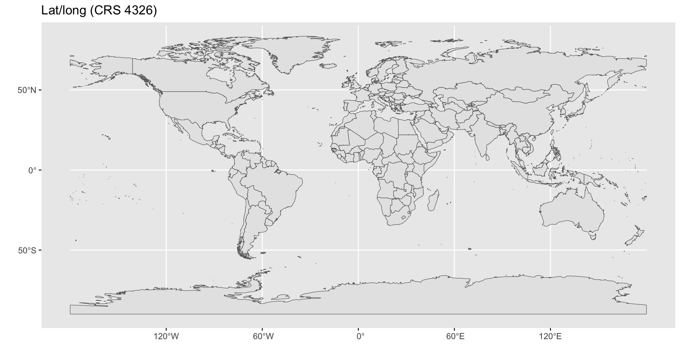
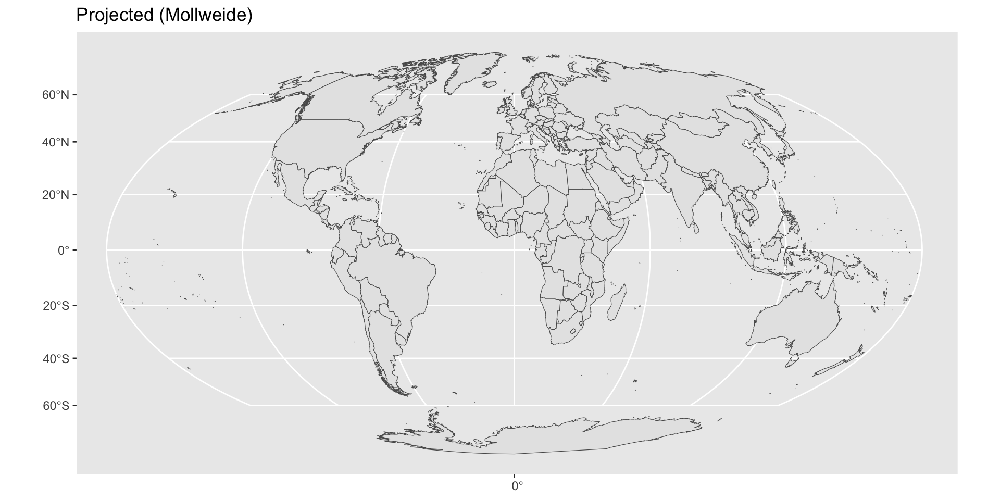
Converting our data to sf object
st_as_sf()turns a data frame with lat/long columns into an sf object
Checking the CRS
st_crs()tells us an sf object’s CRS. Add$epsgto get just the EPSG code
[1] 4326[1] 2915- 2915 is a projected CRS designed for Tennessee (measured in feet, not degrees)
- Our points and our zones use different CRSs!
Why does the CRS matter?
- The same Knox County zones in two CRSs: gray = EPSG 2915 (feet), orange = EPSG 4326 (degrees)
- Under the hood, coordinates are just numbers, and these are in different units. Plotted as raw numbers, the same place lands in two very different spots
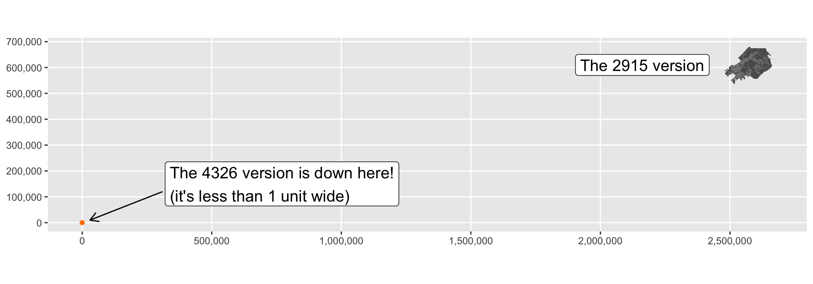
Plotting our data
- The zoning shapefile (2915) uses a different CRS than our points (4326). Can we still plot them together?
- Yes!
geom_sf()converts the layers so they line up (“projecting on the fly”)
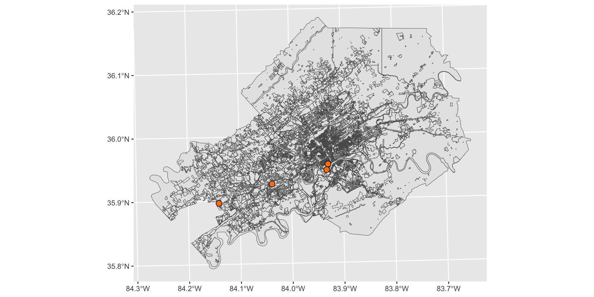
#2: Choropleth Maps
Choropleth maps
Geographical heat maps, also known as choropleth maps, color each area by a value in our data.
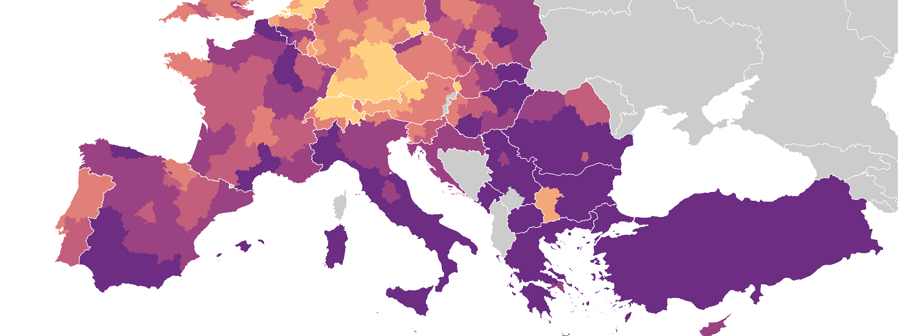
Joining data to shapes
- Our shapes and our data are usually in separate tables, so we need to join them
- We need a shared ID. For US places, that’s usually the FIPS code
- The Federal Information Processing Standards (FIPS) have codes for states, counties, etc.

Introducing left_join()
left_join(x, y, by = "key")combines two data frames by matching rows on a shared key variable- Keeps every row of
x(the “left” table) and adds the columns fromy - If a row in
xhas no match iny, the new columns getNA
- Keeps every row of
States
# A tibble: 3 × 2
fips state
<chr> <chr>
1 47 Tennessee
2 01 Alabama
3 13 Georgia Pops
# A tibble: 3 × 3
fips state pop
<chr> <chr> <dbl>
1 47 Tennessee 6.9
2 01 Alabama 5
3 37 North Carolina 10.4# A tibble: 3 × 4
fips state.x state.y pop
<chr> <chr> <chr> <dbl>
1 47 Tennessee Tennessee 6.9
2 01 Alabama Alabama 5
3 13 Georgia <NA> NA - Georgia (
"13") isn’t inpops→NA - North Carolina (
"37") isn’t instates→ dropped - Both tables have a
statecolumn, but we only joinedby = "fips"→ R keeps both and adds suffixes:state.x(fromstates) andstate.y(frompops)
Our data
Our shapes (from {tigris}):
Simple feature collection with 4 features and 2 fields
Geometry type: MULTIPOLYGON
Dimension: XY
Bounding box: xmin: -2356114 ymin: -1295598 xmax: 1419068 ymax: 845925.2
Projected CRS: USA_Contiguous_Albers_Equal_Area_Conic
STATEFP NAME geometry
1 48 Texas MULTIPOLYGON (((-998043.8 -...
2 06 California MULTIPOLYGON (((-2066285 -2...
3 21 Kentucky MULTIPOLYGON (((571924.5 -8...
4 13 Georgia MULTIPOLYGON (((939223.1 -2...2020 Census population by state:
# A tibble: 4 × 4
GEOID NAME variable value
<chr> <chr> <chr> <dbl>
1 01 Alabama DP1_0001C 5024279
2 02 Alaska DP1_0001C 733391
3 04 Arizona DP1_0001C 7151502
4 05 Arkansas DP1_0001C 3011524Joining the data
- Both tables have the state FIPS code, but with different names:
STATEFPinus_states_sfandGEOIDinpop_counts_2020 - Put the sf object first so the result is still an sf object
Simple feature collection with 3 features and 4 fields
Geometry type: MULTIPOLYGON
Dimension: XY
Bounding box: xmin: -2356114 ymin: -1295598 xmax: 1223687 ymax: 845925.2
Projected CRS: USA_Contiguous_Albers_Equal_Area_Conic
STATEFP NAME.x NAME.y value geometry
1 48 Texas Texas 29145505 MULTIPOLYGON (((-998043.8 -...
2 06 California California 39538223 MULTIPOLYGON (((-2066285 -2...
3 21 Kentucky Kentucky 4505836 MULTIPOLYGON (((571924.5 -8...Plotting spatial data
- Map the data to
fillinsideaes()
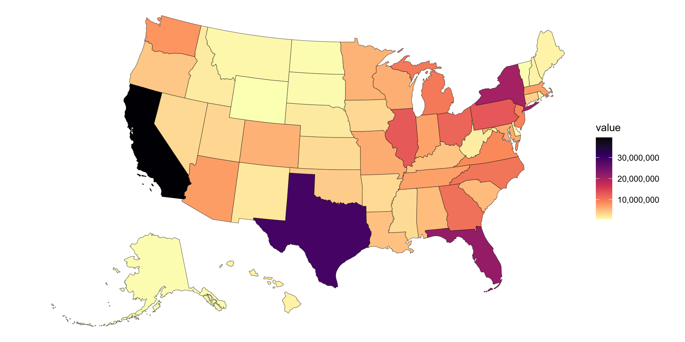
Adding points
- Same steps as Case #1: read in the
.csv,st_as_sf(), add ageom_sf()layer shift_geometry()moves the Alaska and Hawaii capitals to match the shifted map
# Step 4: Read in the capitals and convert to sf
state_capitals_sf <- read_csv("us-state-capitals.csv") |>
st_as_sf(coords = c("longitude", "latitude"), crs = 4326) |>
shift_geometry()
# Step 5: Add the capitals as another geom_sf() layer
capitals_map <- ggplot() +
geom_sf(data = joined_state_data_sf, aes(fill = value)) +
geom_sf(data = state_capitals_sf, shape = 8, color = "limegreen") +
scale_fill_viridis_c(option = "magma", labels = scales::label_comma(), direction = -1) +
theme_void()Adding points
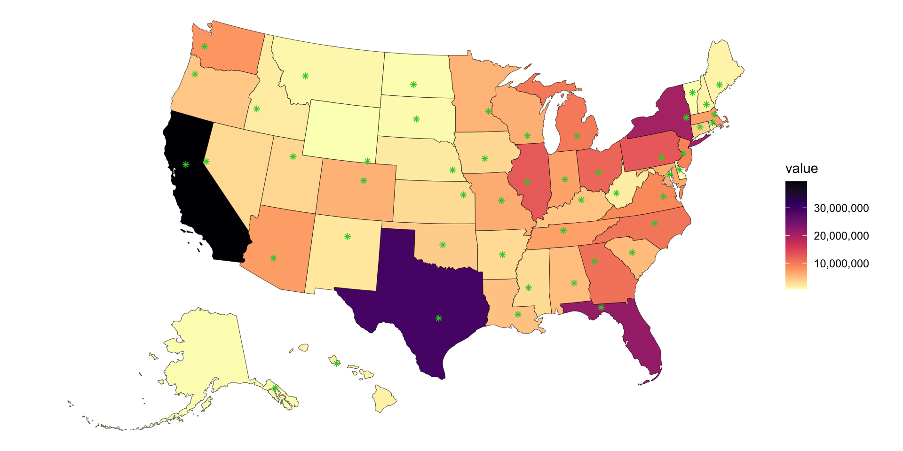
Next Semester (Pt. I)
- STEM 692: Applied Machine Learning in Education, Health, and Human Sciences (Online, Sync)
- Wed: 9-11am
- Dr. Joshua Rosenberg
- CADE 691: Visualizing Data in R (Online, Sync)
- Thurs: 3-5pm
- Dr. Joshua Rosenberg
- CADE 695: Capstone in Educational Data Science (Online, Async)
- Date/Time: TBD based on student/faculty schedules
- Dr. Joshua Rosenberg
Grad certificate
The University of Tennessee, Knoxville, offers an online graduate certificate in Educational Data Science for students interested in digital data collection, analysis, visualization, and more in educational settings. The certificate can be added to current graduate students’ studies or pursued as a stand-alone certificate for graduate-level students.
Looking Ahead
Next Week’s Structure
- Test drive zoom timers
- Final rubric (incorporating your suggestions)
- Preview peer feedback form
Looking Ahead
- Next week:
- Final Project Presentations!
- 5 min presentation of your final project
- 1 overview slide, 3 plots
- Homework:
- Complete slides in shared Google Slides by Monday night (see Final Project Assignment)
- Final project Canvas submissions due 12/4, 11:59pm
- Remember to explicitly state your research question for each viz
- Define each variable used and how measured/units
- Preview your .html before submitting. It should like a finished, polished report!
- No late finals accepted.
Collaborative Practice
UTK Educational Data Science